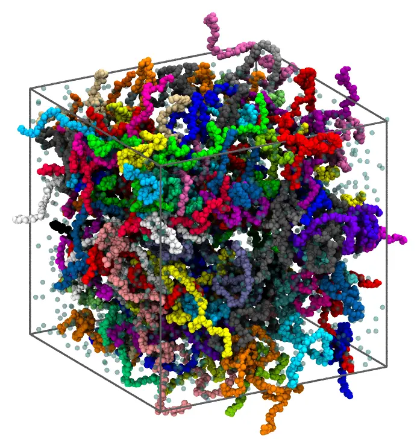
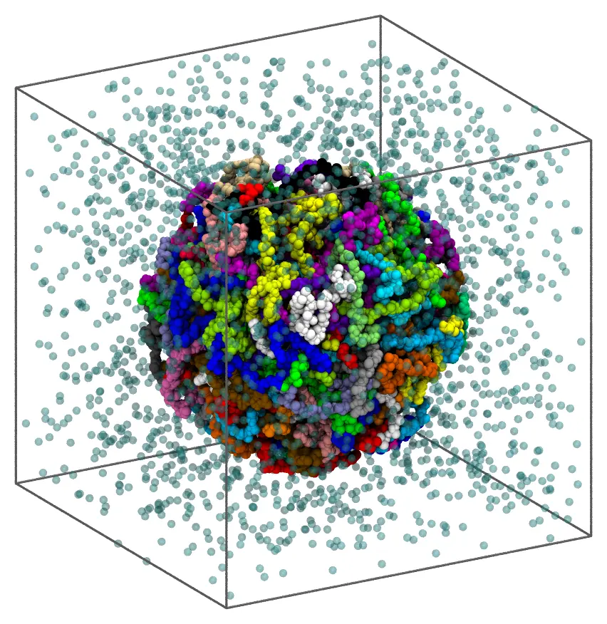
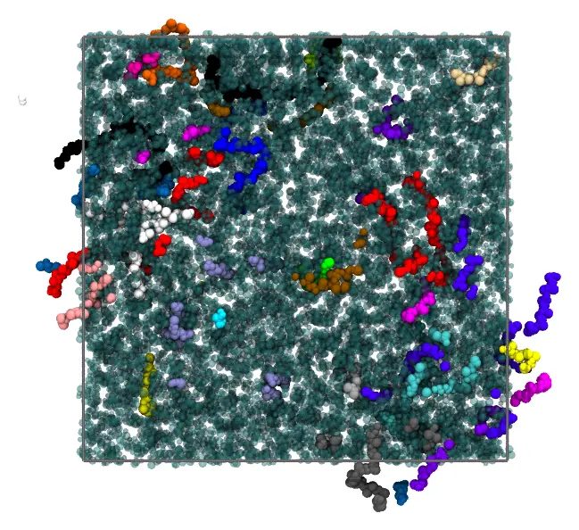
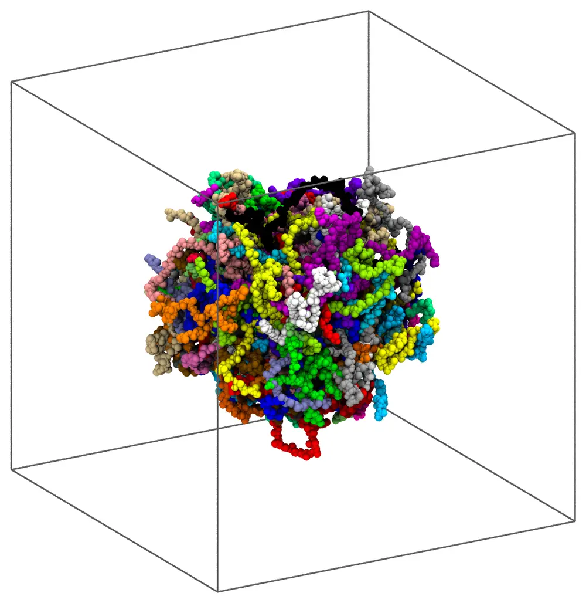
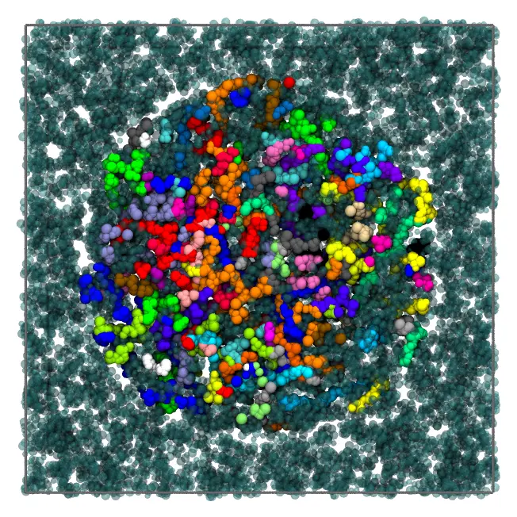

Biomolecular condensate
Biomolecular condensates are droplets of proteins (often intrinsically disordered ones) and nucleic acids, formed by liquid–liquid phase separation from the solution around them, in which the proteins reach hundreds of mg/mL. Here, the protein is the elastin-like polypeptide (VPGVG)₂₀, a disordered chain of 100 residues, in the coarse-grained model SIRAH, with its water model, WT4. The same composition, 123 chains and 49,552 WT4 molecules in a periodic cube of 260 Å (242,488 beads), is packed in two ways:
- a homogeneous mixture, from which the condensate forms in the simulation: the chains, at 95 mg/mL in the whole cell, pack in a few seconds;
- a droplet of 100 Å of radius, with the chains at 400 mg/mL, in the water: too dense to pack from a random placement, it is packed at half the density and compressed (Packing by compression).
The chains are flexible: they are Polymers of rigid monomers, held together by links between the monomers.

The homogeneous mixture: the chains, each in a color, with one in every 20 water molecules shown. The full-length chains are shown, each placed in the cell by its center: a chain of up to 100 Å crosses the faces of the cell, and its parts outside are the periodic images of parts inside (with PBC, an artifact of the view only).

The droplet: the chains at 400 mg/mL, with one in every 20 water molecules shown.
Files: peptides.pdb (the conformations of the chains), wt4.pdb, and the input files homogeneous.inp, droplet_chains.inp and droplet_water.inp.
The chains
peptides.pdb holds 10 conformations of (VPGVG)₂₀ (one model each), random coils of 360 beads, with radii of gyration between 21 and 40 Å, in the bead names of SIRAH (GN, GC and GO on the backbone, BCB and BCG on the side chains of valine and proline; glycine has no side-chain bead).
Generating the conformations is not the job of Packmol, but of the user: they should come from a simulation of the free chain, for example a short molecular dynamics simulation at high temperature. The conformations of peptides.pdb were built by build_peptides.jl, a proof of concept only: self-avoiding random walks with dihedral angles from the regions of the Ramachandran plot of disordered proteins, mapped to the beads of SIRAH, with no force field behind them.
Several conformations, rather than one, also matter for the simulation itself, independently of the packing: the chains start from different conformations, and the results depend less on that of a single one.
The chains as polymers
A rigid chain does not fill the space between the others: packed as rigid molecules, these chains jam at about 220 mg/mL, whatever their conformations. As Polymers, they are flexible: each chain is 20 monomers of VPGVG (18 beads), each a rigid fragment, turning about its bond to the next one:
repeat 20
fragment 18
rotatable 18 1
end repeatBead 18 of a monomer is the GO of its last residue (a glycine), and bead 1 of the next monomer the GN of its first residue (a valine), bonded to it. The bonds of the beads are the CONECT records of peptides.pdb (SIRAH bonds GN–GC and GC–GO in each residue, GO to the GN of the next residue, and the side-chain beads to their GC): the bonds of coarse- grained beads cannot be guessed from their distances, as those of atoms (with bond_distance), since bonded and non-bonded beads are at similar distances. rotatable 18 1 stands for the links that keep the length and the angles of the bond, at their values in each conformation: GO–GN, and the bonds of each to its other neighbor, GC–GN and GO–GC (three links, 2.2 to 2.5 Å), and leaves the monomers free to turn about it. Each chain is built from the monomers of its own conformation, and the pairs of beads of different monomers up to three bonds apart are left out of the distances (see Polymers).
The chains are first packed as rigid molecules, and then released: released overlapping each other, the chains get threaded through each other's monomers, and do not separate.
Here the flexibility is at the level of the repeated pentapeptide: each monomer of 5 residues is rigid. It could be set at the level of the residues instead, each residue a fragment turning about its bond to the next one: a repeat 20 block of five fragment lines, of the sizes of the residues (4, 4, 3, 4 and 3 beads for V, P, G, V and G), each with rotatable 4 1 (or 3 1 for glycine: its GO to the GN of the next residue). More monomers make the chains more flexible, and the packing slower.
The numbers of molecules
A chain has 8207.6 g/mol, and a volume of 9949 ų (0.73 mL/g, the specific volume of proteins). In the droplet, a sphere of 100 Å of radius (4.19 × 10⁶ ų), 400 mg/mL is 123 chains, and the remaining volume holds 8985 WT4 molecules, of 330 ų each (a WT4 molecule represents 11 water molecules). The cube of 260 Å has 40,567 WT4 molecules outside the droplet: 49,552 in all, the water of the homogeneous mixture.
Homogeneous mixture
The input file homogeneous.inp (click to expand)
#
# The chains of the condensate, (VPGVG)20 in the SIRAH coarse-grained representation,
# and the WT4 water of SIRAH, mixed in a periodic cube (the composition of the droplet of
# droplet_chains.inp and droplet_water.inp: the condensate forms in the simulation).
#
tolerance 2.0
output homogeneous.pdb
pbc -130. -130. -130. 130. 130. 130.
# To write only the initial placement of the molecules to the output file,
# without packing them (to check the constraints), uncomment the line below.
# check_initial_placement
# The chains: 20 monomers of VPGVG (18 beads each), each turning about the bond of its
# last bead (the GO of its last residue) to the first bead of the next one (the GN of
# its first residue). The bonds are the CONECT records of peptides.pdb
structure peptides.pdb
number 123
repeat 20
fragment 18
rotatable 18 1
end repeat
end structure
# The water: the volume of the cell minus that of the chains (9949 ų each),
# 330 ų per WT4 molecule (11 water molecules)
structure wt4.pdb
number 49552
end structure
packmol homogeneous.inpIt packs in about 5 seconds with 14 threads: the chains and the water as rigid molecules (4 seconds), and then the released chains, which satisfy the links and the distances at once.

A slab of 20 Å through the middle of the cell, with all the water.
The biocondensate droplet
The droplet is packed in two steps: the chains alone, in the sphere, compressed to 400 mg/mL, and then the water, around the fixed chains. The water packs in seconds around the chains, while packed with them it would be compressed too, at every step of the compression of the chains.
Step 1: the chains
#
# Step 1 of the droplet: the chains of the condensate, (VPGVG)20 in the SIRAH
# coarse-grained representation, at 400 mg/mL in a sphere of 100 Å. At this density the
# chains do not pack from a random placement: they are packed at half the density, with
# the sphere and the cell expanded, and compressed back in steps (`use_compression`).
#
tolerance 2.0
output droplet_chains.pdb
pbc -130. -130. -130. 130. 130. 130.
use_compression 0.5
# To write only the initial placement of the molecules to the output file,
# without packing them (to check the constraints), uncomment the line below.
# check_initial_placement
# 123 chains of 8207.6 g/mol: 400 mg/mL in the sphere. Each monomer of VPGVG (18 beads)
# turns about the bond of its last bead (GO) to the first bead of the next one (GN); the
# bonds are the CONECT records of peptides.pdb
structure peptides.pdb
number 123
inside sphere 0. 0. 0. 100.
repeat 20
fragment 18
rotatable 18 1
end repeat
end structure
With use_compression 0.5, the chains are first packed at half the density (0.5 is the fraction of the density, and the default: use_compression alone is the same). The sphere and the cell are expanded by 2^(1/3), to a sphere of 126 Å, in a cube of 328 Å, twice the volume, and the chains are packed there, at 200 mg/mL: as rigid molecules, then released. Then the system is compressed in steps back to the sphere of 100 Å: the positions of the chains, the sphere and the cell scaled together, and the chains packed again from there at each step.
Check the initial placement first
Uncomment the check_initial_placement line of the input file, and run it: the initial placement is that of the expanded sphere, with the chains as rigid molecules, before any packing:

The initial placement, in the expanded cell: the rigid chains overlap each other.
Packing
packmol droplet_chains.inpThe packing at 200 mg/mL takes a few seconds, and the compression 12 to 14 steps, in 25 to 40 seconds with 14 threads:
Compression step 1: density 58.32% of the target, converged (0.5 s)
Compression step 2: density 68.02% of the target, not converged (5.6 s)
Compression step 3: density 62.92% of the target, converged (0.7 s)
...
Compressed to the density of the input in 12 steps (34.9 s).Step 2: the water
#
# Step 2 of the droplet: the chains of step 1 (droplet_chains.pdb, fixed) and the WT4
# water of SIRAH, in the droplet and around it. The dilute phase, at the micromolar
# concentrations of chains of this length, has no chain in this volume.
#
tolerance 2.0
output droplet.pdb
pbc -130. -130. -130. 130. 130. 130.
# To write only the initial placement of the molecules to the output file,
# without packing them (to check the constraints), uncomment the line below.
# check_initial_placement
# The chains, as packed in step 1
structure droplet_chains.pdb
number 1
fixed 0. 0. 0. 0. 0. 0.
end structure
# The water of the droplet: its volume minus that of the chains (9949 ų each),
# 330 ų per WT4 molecule (11 water molecules)
structure wt4.pdb
number 8985
inside sphere 0. 0. 0. 100.
end structure
# The water around the droplet
structure wt4.pdb
number 40567
outside sphere 0. 0. 0. 100.
end structure
packmol droplet_water.inpThe chains of step 1 are fixed, and the water fills the droplet and the cell around it, in a couple of seconds.

A slab of 20 Å through the middle of the droplet: the chains, each in a color, and the water between them and around the droplet.
The two systems show two ways of building a system that does not pack at its density from a random placement:
- pack the molecules where they pack easily, and let the simulation take them where they go (the homogeneous mixture, from which the condensate forms);
- pack them at a lower density, and compress them (Packing by compression), for systems that must start in their final arrangement. The compression works also with rigid molecules, but flexible chains (polymers) go much further.
Julia script
The same systems, built in Julia:
using Packmol# The chains: 20 monomers of VPGVG (18 beads), each turning about# the bond of its last bead to the first bead of the next one (the# bonds are the CONECT records of peptides.pdb)fragments = [20 => fragment(18; rotatable = [(18, 1)])]# The homogeneous mixturechains = flexible_structure_type("peptides.pdb"; number = 123, fragments)water = structure_type("wt4.pdb"; number = 49552)homogeneous = PackmolSystem([chains, water]; output = "homogeneous.pdb", tolerance = 2.0, unitcell = [260. 0. 0.; 0. 260. 0.; 0. 0. 260.], # centered at the origin # check_initial_placement = true,)packmol(homogeneous)# The droplet, step 1: the chains at 400 mg/mL, packed at half# the density and compressedorigin = [0., 0., 0.]droplet_chains = PackmolSystem( [flexible_structure_type("peptides.pdb"; number = 123, fragments, constraints = [InsideSphere(origin, 100.)])]; output = "droplet_chains.pdb", tolerance = 2.0, unitcell = [260. 0. 0.; 0. 260. 0.; 0. 0. 260.], use_compression = 0.5,)packmol(droplet_chains)# Step 2: the water, around the fixed chainsdroplet = PackmolSystem([ structure_type("droplet_chains.pdb"; number = 1, fixed = (origin, origin)), structure_type("wt4.pdb"; number = 8985, constraints = [InsideSphere(origin, 100.)]), structure_type("wt4.pdb"; number = 40567, constraints = [OutsideSphere(origin, 100.)]), ]; output = "droplet.pdb", tolerance = 2.0, unitcell = [260. 0. 0.; 0. 260. 0.; 0. 0. 260.],)packmol(droplet)